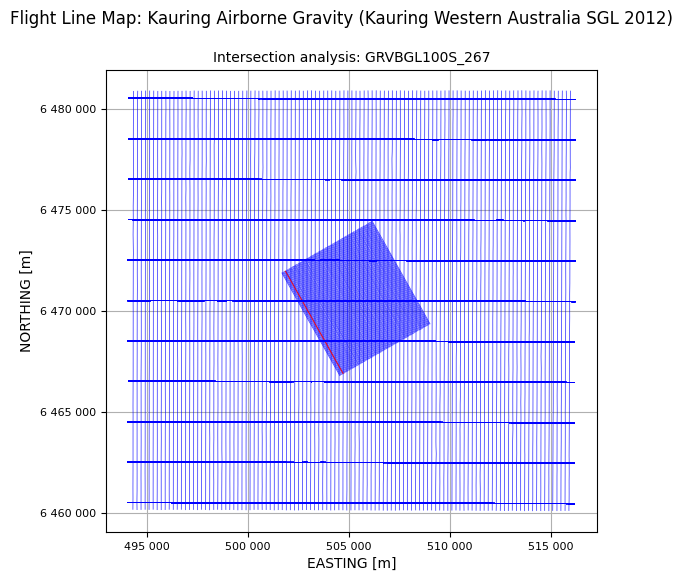

Intersection Analysis¶
For surveys with traverse lines and control lines, it is common to set a requirement on the differences in value of some particular data channel at the intersection of the traverses and controls. This can be on a height or altitude channel with the purpose of enforcing a relatively smooth flying drape surface. It can be on any geophysical data channel with the purpose of assessing the repeatability of the data as a measure of error.
galileoQC provides the checkIntersection function for intersection analysis. It reports back comparing a maximum allowed value against either individual difference values, or the RMS difference for each traverse line, or the RMS difference divided by \(\sqrt{2}\) for each traverse line.
Here we demonstrate its use on the 2012 Kauring airborne gravimetry survey data.
Ensure you have run the Prepare_ASEGGDF2 notebook first so that the 2012 Kauring data are prepared for review.
Import the required modules, and set the path to the geowhizz files.
from pathlib import Path
import galileoQC as qc
dh = Path(r'./Kauring_grv/GRAV.hdf5')
if not dh.exists():
%run ./Prepare_2012KauringData.ipynb
No field width found in format code A4
WARNING - no date channel found.
Key channels for linegroup attributes found:
LINE at 2, FLIGHT at 3.
12 channels to be written to geoWhizz file:
['EASTING', 'NORTHING', 'LINE', 'FLIGHT', 'FID', 'UTCSECOND',
'LATITUDE', 'LONGITUD', 'GPSZ', 'MSLZ', 'ALT', 'GRVBGL100S_267']
Writing to geoWhizz file: Kauring_grv/GRAV.hdf5
Setting Line attributes for Kauring_grv/GRAV.hdf5 to include flight numbers from FLIGHT.
NO ACTION TAKEN ON LINE_TYPE - no plan file provided.
NO ACTION TAKEN ON LINE_TYPE - line_type not in:
['Xcal_nsw', 'Xcal_can', 'SGL_GA', 'SGL_NSW', 'NRG', 'ARK', 'SGL_GDF', 'SGL_Kauring'].
Complete.
Setting ProjectName = Kauring Airborne Gravity for GRAV.hdf5.
Setting BlockID = Kauring Western Australia SGL 2012 for GRAV.hdf5.
Setting Acquirer = SGL for GRAV.hdf5.
Changed CoordFrame attribute(s) for GRAV.hdf5.
NO ACTION TAKEN ON LINE_TYPE - no plan file provided.
Setting Line attributes for GRAV.hdf5 according to the SGL_Kauring scheme.
Whizz Version 1.0
Acquirer: SGL
BlockID: Kauring Western Australia SGL 2012
ProjectName: Kauring Airborne Gravity
Coordinates
AltitudeChannel: GPSZ
GeoDatum: WGS84
HeightDatum: GRS80
LatitudeChannel: LATITUDE
LongitudeChannel: LONGITUD
Projection: UTM
TimeChannel: UTCSECOND
UTMZone: 50
XChannel: EASTING
YChannel: NORTHING
224 lines: total distance flown [km] = 3,106.1
224 lines:
['100100', '100200', '100300', '100400', '100500', '100600', '100700',
'100800', '100900', '10100', '101000', '101100', '101200', '101300',
'101400', '101500', '101600', '101700', '101800', '101900', '10200',
'102000', '102100', '102200', '102300', '102400', '102500', '102600',
'102700', '102800', '102900', '10300', '103000', '103100', '103200',
'103300', '103400', '103500', '103600', '103700', '103800', '103900',
'10400', '104000', '104100', '104200', '104300', '104400', '104500',
'104600', '104700', '104800', '104900', '10500', '105000', '105100',
'105200', '105300', '105400', '105500', '105600', '105700', '105800',
'105900', '10600', '106000', '106100', '106200', '106300', '106400',
'106500', '106600', '106700', '106800', '106900', '10700', '107000',
'107100', '107200', '107300', '107400', '107500', '107600', '107700',
'107800', '107900', '10800', '108000', '108100', '108200', '108300',
'108400', '108500', '108600', '108700', '108800', '108900', '10900',
'109000', '109100', '109200', '109300', '109400', '109500', '109600',
'109700', '109800', '109900', '11000', '110000', '110100', '110200',
'110300', '110400', '110500', '110600', '110700', '110800', '110900',
'11100', '200100', '200201', '200300', '200400', '200500', '200600',
'200700', '200801', '200901', '201000', '201101', '201200', '201300',
'201400', '201501', '201601', '201700', '201800', '201900', '202000',
'202100', '202200', '202300', '202400', '202501', '202600', '202701',
'202800', '202901', '203001', '203100', '203201', '203303', '203401',
'203501', '203601', '203701', '203801', '203902', '204001', '204101',
'204200', '204300', '204401', '204500', '204600', '204700', '204800',
'204900', '205001', '205100', '205200', '205300', '205401', '205500',
'205600', '205700', '205800', '205901', '206000', '206100', '206200',
'206300', '206400', '206501', '206600', '206700', '206800', '206900',
'207000', '207100', '207200', '207300', '207400', '207500', '207600',
'207700', '207800', '207900', '208000', '208100', '208200', '208300',
'208400', '208500', '208601', '208701', '208800', '208900', '209001',
'209100', '209201', '209300', '209401', '209500', '209601', '209701',
'209801', '209901', '210000', '210101', '210200', '210300', '210400']
12 channels:
['ALT', 'EASTING', 'FID', 'FLIGHT', 'GPSZ', 'GRVBGL100S_267',
'LATITUDE', 'LINE', 'LONGITUD', 'MSLZ', 'NORTHING', 'UTCSECOND']
Whizz Version 1.0
12 channels:
channel units description
--------------------------------------------------
ALT m
EASTING m
FID
FLIGHT
GPSZ m
GRVBGL100S_267 mGal
LATITUDE degrees
LINE
LONGITUD degrees
MSLZ m
NORTHING m
UTCSECOND s
Whizz Version 1.0
Acquirer: SGL
BlockID: Kauring Western Australia SGL 2012
ProjectName: Kauring Airborne Gravity
Sample time and distance statistics
Min = -86399.500 s, 16.2 m
Max = 0.500 s, 27.8 m
Mean = -0.780 s, 23.0 m
Stdev = 333 s, 2 m
Whizz Version 1.0
Acquirer: SGL
BlockID: Kauring Western Australia SGL 2012
ProjectName: Kauring Airborne Gravity
Coordinates
AltitudeChannel: GPSZ
GeoDatum: WGS84
HeightDatum: GRS80
LatitudeChannel: LATITUDE
LongitudeChannel: LONGITUD
Projection: UTM
TimeChannel: UTCSECOND
UTMZone: 50
XChannel: EASTING
YChannel: NORTHING
Line <HDF5 group "/Whizz Version 1.0/Lines/100100" (12 members)>
1 lines: total distance flown [km] = 20.7
Flight: 13
FlightNumber: 13
LineNumber: 100100
LineType: SGL_Kauring
LineVariety: Traverse
NumberOfFids: 854
ReflightNumber: 0
Segment: 0.0
['100100', '100200', '100300', '100400', '100500', '100600', '100700',
'100800', '100900', '10100', '101000', '101100', '101200', '101300',
'101400', '101500', '101600', '101700', '101800', '101900', '10200',
'102000', '102100', '102200', '102300', '102400', '102500', '102600',
'102700', '102800', '102900', '10300', '103000', '103100', '103200',
'103300', '103400', '103500', '103600', '103700', '103800', '103900',
'10400', '104000', '104100', '104200', '104300', '104400', '104500',
'104600', '104700', '104800', '104900', '10500', '105000', '105100',
'105200', '105300', '105400', '105500', '105600', '105700', '105800',
'105900', '10600', '106000', '106100', '106200', '106300', '106400',
'106500', '106600', '106700', '106800', '106900', '10700', '107000',
'107100', '107200', '107300', '107400', '107500', '107600', '107700',
'107800', '107900', '10800', '108000', '108100', '108200', '108300',
'108400', '108500', '108600', '108700', '108800', '108900', '10900',
'109000', '109100', '109200', '109300', '109400', '109500', '109600',
'109700', '109800', '109900', '11000', '110000', '110100', '110200',
'110300', '110400', '110500', '110600', '110700', '110800', '110900',
'11100', '200100', '200201', '200300', '200400', '200500', '200600',
'200700', '200801', '200901', '201000', '201101', '201200', '201300',
'201400', '201501', '201601', '201700', '201800', '201900', '202000',
'202100', '202200', '202300', '202400', '202501', '202600', '202701',
'202800', '202901', '203001', '203100', '203201', '203303', '203401',
'203501', '203601', '203701', '203801', '203902', '204001', '204101',
'204200', '204300', '204401', '204500', '204600', '204700', '204800',
'204900', '205001', '205100', '205200', '205300', '205401', '205500',
'205600', '205700', '205800', '205901', '206000', '206100', '206200',
'206300', '206400', '206501', '206600', '206700', '206800', '206900',
'207000', '207100', '207200', '207300', '207400', '207500', '207600',
'207700', '207800', '207900', '208000', '208100', '208200', '208300',
'208400', '208500', '208601', '208701', '208800', '208900', '209001',
'209100', '209201', '209300', '209401', '209500', '209601', '209701',
'209801', '209901', '210000', '210101', '210200', '210300', '210400']
12 channels:
['ALT', 'EASTING', 'FID', 'FLIGHT', 'GPSZ', 'GRVBGL100S_267',
'LATITUDE', 'LINE', 'LONGITUD', 'MSLZ', 'NORTHING', 'UTCSECOND']

Here is a check for the RMS intersection difference along each traverse line against the Bouguer gravity (filtered at \(100\,s\)).
qc.checkIntersection(dh, zChannel='GRVBGL100S_267', max_allowed_deltaZ=1.0)
All 224 lines in database indexed as traverse or as control.
213 traverse lines checked,, 5 exceeded the 1.0 mGal allowed RMS difference in GRVBGL100S_267.
200100:3 [bearing=150.6] intersection GRVBGL100S_267 RMS difference = 1.0 > 1.0 mGal.
200500:9001 [bearing=-29.6] intersection GRVBGL100S_267 RMS difference = 1.4 > 1.0 mGal.
200600:3 [bearing=150.5] intersection GRVBGL100S_267 RMS difference = 1.0 > 1.0 mGal.
200801:15 [bearing=150.5] intersection GRVBGL100S_267 RMS difference = 1.1 > 1.0 mGal.
208900:4 [bearing=150.7] intersection GRVBGL100S_267 RMS difference = 1.0 > 1.0 mGal.
Here is an RMS intersection difference analysis of the survey heights.
qc.checkIntersection(dh, zChannel='GPSZ', max_allowed_deltaZ=10.0)
All 224 lines in database indexed as traverse or as control.
All 213 traverse lines had GPSZ RMS differences less than 10.0 m.
In the final example, we analyse the Bouguer gravity against the RMS difference divided by \(\sqrt{2}\). With plot_flag=True, we get a flight-line map highlighting the failed line(s) in red.
qc.checkIntersection(dh, zChannel='GRVBGL100S_267', max_allowed_deltaZ=1.0,
mode="RMSroot2", plot_flag=True)
All 224 lines in database indexed as traverse or as control.
213 traverse lines checked,, 1 exceeded the 1.0 mGal allowed RMS/sqrt2 difference in GRVBGL100S_267.
200500:9001 [bearing=-29.6] intersection GRVBGL100S_267 RMS/sqrt2 difference = 1.0 > 1.0 mGal.
